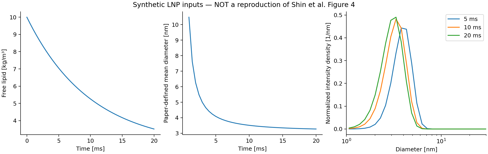

Shin: lipid nanoparticle formation
Equation and process balances
Shin et al. (2025) models a diameter distribution through nucleation, growth, and binary coalescence. For a concentration basis per current mixture volume, the implemented balance is
\[\frac{\partial n(L,t)}{\partial t} +\frac{\partial [G(L,t)n(L,t)]}{\partial L} =B_n(L,t)+B_c(L,t)-D_c(L,t)-\lambda(t)n(L,t).\]
$D_c$ is a positive removal magnitude. The paper's printed PBE has a plus sign beside its positive loss integral; the implementation uses physical parent removal. This convention must be reconciled with author code before reproducing its figures. Lengths are meters, time is seconds, and lipid concentrations are kg/m³.
The growth and classical-nucleation laws are
\[G(L,t)=k_gLC_\infty(w,T)[S(t)-S^*(L,w,T)],\qquad S(t)=\frac{c(t)}{C_\infty(w,T)},\]
\[L_c=\frac{4\gamma V_m}{k_BT\ln S},\qquad J=A_n\exp\!\left[-\frac{16\pi\gamma^3V_m^2}{3(k_BT)^3(\ln S)^2}\right].\]
Nucleation is zero for $S\le1$. $V_m$ is volume per molecule, matching $k_B$; a molar volume needs a different thermodynamic convention. The Gaussian source is centred at $L_c$ with a separately specified size width. The printed Gaussian omits its normalization factor and uses the same symbol as interfacial energy. The recipe requires a normalization choice instead of treating those conventions as interchangeable. With a total-rate choice it integrates each Gaussian bin; midpoint sampling can miss a narrow moving source entirely.
The coalescence kernel is
\[K(L,M,t)=k_{\mathrm{PEG}}\alpha_{\mathrm{base}}(L,M,w,T) \frac{2k_BT(L+M)^2}{3\eta LM}.\]
The supplied attachment function must exclude $k_{\mathrm{PEG}}$ to avoid counting the fitted factor twice. Fixed-pivot deposition uses additive property $L^3$. Thus $L_*=(L_1^3+L_2^3)^{1/3}$; diameter is retained for growth and observations while coalescence conserves volume. The expected physical loss is $D_c(L,t)=n(L,t)\int K(L,M,t)n(M,t)\,dM$.
For delayed mixing, the paper supplies
\[w(t)=\frac{\mathrm{FRR}}{\mathrm{FRR}+1}(1-e^{-t/\tau}).\]
The recipe declares a material-element closure $V/V_{\mathrm{organic}}=1/(1-w)$ and dilution hazard $\lambda=(dw/dt)/(1-w)$. Free lipid obeys
\[\frac{dc}{dt}=-\lambda c-\rho_p\frac{\pi}{6} \left[\left.\frac{dM_3}{dt}\right|_{\mathrm{growth}} +\left.\frac{dM_3}{dt}\right|_{\mathrm{nucleation}}\right].\]
Coalescence redistributes particle volume without consuming dissolved lipid. In the absence of unresolved product loss, the invariant is $V(t)[c(t)+\rho_p\pi M_3(t)/6]$. This free-lipid/volume closure is explicit; the main paper does not print a complete free-lipid ODE. Instantaneous mixing starts at $c_0/(1+\mathrm{FRR})$; delayed mixing starts before that dilution.
Target comparison and missing inputs
Figure 4 is the intended first comparison: intensity-weighted PSDs and the paper-defined mean diameter during formation and incubation. The reported kinetic values are $A_n=2.0\times10^{22}$, $k_g=11.88$, $k_{\mathrm{PEG}}=6.5\times10^{-6}$, with interfacial energy near 0.010 N/m. Those values alone do not define a forward calculation.
A reproducible run still needs the exact initial state/grid limits, temperature and viscosity, molecular volume and density, a solubility conversion from mole fraction to concentration, $S^*$, nucleation width/normalization, and the attachment law. The DLVO integral's separation, screening, and reciprocal conventions also need confirmation. The publisher supplement was unavailable to this session; the main article states that data are available on request. No experimental arrays or author implementation are included in the repository.
The paper uses 200 logarithmic bins, a second-order central growth difference, and MATLAB ode15s. This package's current sectional recipe uses conservative upwind/MUSCL or uniform-grid WENO, fixed-pivot collisions, and explicit SSPRK unless exported to an external solver. These numerical differences must be reported and refined; they must not be labelled a reproduction of the paper's numerical method.
Code deployment
The reusable builder in examples/papers/cej2025_lnp.jl makes the mechanisms individually inspectable:
model = PBMModel(
nucleation=source,
growth=Growth(rate=G),
coalescence=Aggregation(beta;
coordinate_map=AdditiveCoordinate(L->L^3,cbrt),overflow=:error),
dilution=Dilution(rate=(L,p,t,ctx)->ctx.fields.dilution),
)source is a bin-integrated Gaussian for total-rate nucleation. G reads free lipid and prescribed solvent fields. beta combines the Brownian kernel with the supplied attachment law and PEG factor. PBMSystem adds free lipid, volume-consistent dilution, and ConservativeExchange based on actual discrete growth/nucleation contributions.
examples/shin_lnp_reproduction.jl exports PSD and concentration histories from an explicitly supplied configuration. An input Julia file must return a named tuple with inputs (keywords for CEJ2025LNP.build), dt, saveat, and provenance describing the data source and target figure. Run it with
julia --project=. examples/shin_lnp_reproduction.jl /path/to/confirmed_inputs.jl /path/to/outputIt deliberately has no default paper inputs. Use the paper's actual output times and obtain the reference data before overlaying measurements. A fitted curve without those inputs would hide model substitutions rather than test the implementation.
Observation definition and demonstration
The paper compares intensity weighting $n_{\mathrm{intensity}}(L)=L^6n(L)$ and its stated mean
\[d_{\mathrm{paper}}= \frac{\int_0^\infty L^7n(L,t)\,dL}{\int_0^\infty L^6n(L,t)\,dL}.\]
The export distinguishes density per meter from number or intensity per bin. A logarithmic grid changes bin widths; connecting per-bin fractions as though they were density values changes the PSD. Normalization is over the modeled window. Finite domain losses can therefore affect both tails and the mean.
Run the existing synthetic recipe and plot its exports with
julia --project=. examples/lipid_nanoparticle_demo.jl
python docs/benchmarks/plot_case_studies.py lnp
These plots show code behavior with the clearly labelled demonstration closures; they are not an overlay of Figure 4. The integrated-source correction changes the demonstration mean to approximately 3.27547 nm. That result is unrelated to the paper's fitted 100-nm-scale PSD and must not be used to claim agreement. Inputs, histories, and PSD arrays record what was actually calculated.